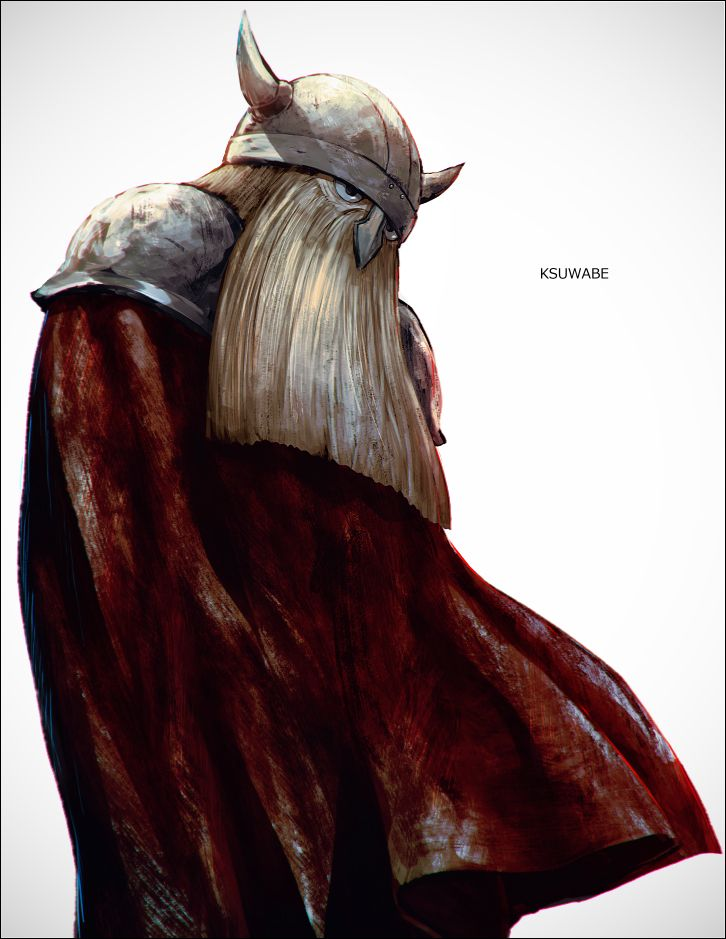

Mengambil data dari MyAnimeList...
Mengambil data dari MyAnimeList...
Penyihir elf yang telah hidup lebih dari seribu tahun. Setelah mengalahkan Raja Iblis bersama kelompok pahlawan, ia memulai perjalanan baru untuk memahami arti sebenarnya dari hubungan manusia.


✦ Koleksi Sihir Frieren
Selama ribuan tahun, Frieren mengumpulkan mantra dari seluruh penjuru dunia — dari yang paling mematikan hingga yang paling tidak berguna. Klik kartu untuk membuka segel mantra.
Sentuh untuk membuka segel
Sihir penghancur standar yang awalnya adalah sihir ofensif milik iblis. Frieren mempelajarinya secara menyeluruh hingga bisa dilepaskan tanpa mantra.
Sentuh untuk membuka segel
Membuat bunga mekar di sekitar pengguna. Frieren menghabiskan 30 tahun penuh mencarinya. Tidak berguna dalam pertarungan. Tapi ia tidak peduli.
Sentuh untuk membuka segel
Sihir ilusi tingkat tinggi milik iblis yang menciptakan bayangan sempurna. Iblis menggunakannya untuk menipu manusia — memanipulasi penglihatan dan memori.
Sentuh untuk membuka segel
Menciptakan titik cahaya kecil yang mengikuti pengguna seperti kunang-kunang. Tidak cukup terang untuk menerangi jalan, tidak bisa untuk bertarung. Tapi terasa hangat.
Sentuh untuk membuka segel
Sihir imitasi milik Serie — penyihir terkuat yang masih hidup. Dapat menyalin sempurna mantra apapun hanya dengan melihatnya sekali. Mustahil dipelajari oleh kebanyakan penyihir.
Sentuh untuk membuka segel
Membuat rasa makanan sedikit lebih enak. Hanya "sedikit". Tidak bisa mengubah makanan basi jadi segar. Tidak berguna sama sekali dalam situasi apapun. Frieren tetap menyimpannya.
Sentuh untuk membuka segel
Dikembangkan Frieren setelah mempelajari iblis selama berabad-abad. Iblis bisa menyembunyikan mana mereka, tapi tidak bisa menyembunyikan niat untuk membunuh. Ini yang membuat Frieren tidak terkalahkan melawan iblis.
Sentuh untuk membuka segel
Menciptakan aroma udara setelah hujan bercampur harum bunga. Tidak ada efek bertarung. Tidak bisa digunakan untuk apapun yang berguna. Hanya baunya saja. Frieren senang.
Sentuh untuk membuka segel
Sihir ledakan penghancur kelas tertinggi. Versi paling mematikan dari sihir ofensif yang diketahui manusia. Frieren menguasainya dalam semalam setelah melihatnya sekali — membuktikan jurang kemampuannya dengan penyihir biasa.
✦ Mereka yang Berjalan Bersama
Setiap orang yang bertemu Frieren meninggalkan jejak — bahkan mereka yang telah lama tiada.

Penyihir dari Kelompok Pahlawan
"Aku menyesal tidak meluangkan lebih banyak waktu untuk mengenalnya."
Frieren adalah penyihir elf yang telah hidup lebih dari seribu tahun. Bagi elf, sepuluh tahun bersama kelompok Himmel hanyalah sekejap — tapi saat Himmel meninggal di usia tua, untuk pertama kalinya Frieren menangis. Ia baru menyadari: ia tidak pernah benar-benar mengenal orang yang telah bersamanya selama satu dekade. Perjalanan barunya bukan untuk mengalahkan musuh, melainkan untuk memahami apa arti "mengenal seseorang" sebelum waktu merenggut mereka satu per satu.

Pahlawan yang Mengalahkan Raja Iblis
"Menjadi pahlawan itu bukan tentang dikenang. Tapi tentang melakukan hal yang benar — bahkan saat tidak ada yang melihat."
Himmel bukan sekadar pahlawan dalam pengertian literal — ia adalah bukti bahwa manusia yang hidupnya singkat bisa meninggalkan kenangan yang abadi melampaui usia seorang elf. Ia tahu umurnya terbatas, tapi tidak pernah menjadikannya alasan untuk tidak bertindak. Patungnya tersebar di seluruh dunia — bukan karena ia meminta, tapi karena orang-orang yang ditolongnya tidak punya cara lain untuk mengungkapkan terima kasih. Bagi Frieren, Himmel adalah orang yang paling ia sesali tidak pernah benar-benar mengenal.
Pendeta Agung yang Membesarkan Fern
"Aku minum bukan karena bahagia — tapi karena hidupku terlalu berat untuk ditanggung dengan kepala yang jernih."
Heiter tampak seperti pendeta pemabuk yang tidak serius — tapi di balik itu ada seseorang yang menanggung beban orang banyak dengan diam. Ia mengadopsi Fern, anak yatim dari pasca-perang, dan mendidiknya menjadi penyihir handal sebelum ia sendiri mati karena penyakit. Permintaan terakhirnya kepada Frieren: jaga Fern. Dan Frieren menerima tanpa ragu — itulah cara mereka menghormati orang yang pernah berjuang bersama.

Pejuang Zwerg dari Kelompok Pahlawan
"Kekuatan bukan tentang siapa yang paling kuat. Tapi siapa yang tetap berdiri untuk melindungi yang lemah."
Eisen adalah Zwerg — ras yang umurnya panjang seperti elf tapi bukan immortal. Ia menjadi pejuang terkuat dalam kelompok Himmel, tapi kini tubuhnya sudah terlalu tua untuk berperang. Ia melatih Stark — anak desa yang hampir kehilangan nyawa — dan mewariskan kekuatan bukan hanya secara fisik, tapi juga nilai tentang kenapa seseorang layak untuk bertarung. Diam, keras, tapi sangat peduli pada generasi yang akan meneruskan perjalanan.

Murid Frieren, Ahli Deteksi Mana
"Guru tidak pernah bertanya apakah aku baik-baik saja. Tapi ia selalu ada saat aku membutuhkan."
Fern adalah anak yatim yang dibesarkan Heiter — pendeta dari kelompok Himmel. Sejak kecil ia belajar sihir dengan disiplin yang luar biasa, melampaui rata-rata penyihir seusianya. Di balik wajah datar dan ekspresi yang jarang berubah, tersimpan rasa sayang yang dalam terhadap Frieren dan Stark. Ia adalah penerus generasi baru — murid yang suatu hari akan melampaui gurunya sendiri, tapi tidak pernah melupakan dari mana ia berasal.

Pejuang Terkuat Generasi Baru
"Aku bukan pemberani. Aku hanya tidak bisa berdiam diri saat orang yang penting bagiku dalam bahaya."
Stark adalah murid Eisen yang diam-diam mewarisi kekuatan melebihi gurunya sendiri — tapi tidak pernah menyadarinya. Ia tumbuh di desa yang hancur, selamat karena Eisen, dan kini berjalan bersama Frieren dan Fern menuju utara. Ia penakut secara mental tapi tubuhnya bergerak duluan saat seseorang terancam. Di balik muka polosnya tersembunyi potensi yang bahkan Eisen pun akui sebagai luar biasa. Hubungannya dengan Fern — awkward, canggung, tapi nyata.
✦ Kata yang Membekas
|
✦ Perjalanan Melintasi Waktu
Seribu tahun berlalu seperti angin bagi Frieren — tapi ada beberapa momen yang membekas selamanya.
Setelah sepuluh tahun berjalan bersama, Frieren, Himmel, Heiter, dan Eisen akhirnya mengalahkan Demon King. Bagi Frieren itu "hanya sepuluh tahun" — sekejap dalam hidupnya yang panjang. Tapi bagi tiga manusia di sisinya, itu adalah seluruh masa muda mereka.
Himmel meninggal di usia tua, dikelilingi orang-orang yang mencintainya. Frieren berdiri di pemakamannya dan untuk pertama kali dalam hidupnya yang panjang — ia menangis. Bukan karena kehilangan, tapi karena baru menyadari ia tidak pernah benar-benar mengenal orang itu. Dan sekarang sudah terlambat.
Heiter yang sudah renta dan sakit menemui Frieren dengan satu permintaan: jaga Fern — anak yang ia besarkan. Frieren, yang tidak pernah memiliki murid, menerima tanpa bertanya. Ini adalah cara mereka — orang-orang yang pernah berjalan bersama Himmel — saling menjaga warisan yang ditinggalkan.
Dengan Fern sebagai murid dan Stark yang bergabung kemudian, Frieren memulai perjalanan baru menuju Ende — ujung utara dunia — tempat konon arwah bisa ditemui. Ia ingin bertemu Himmel satu kali lagi. Bukan untuk bernostalgia — tapi untuk mengatakan apa yang dulu tidak sempat ia ucapkan.
Di setiap desa yang dilewati, di setiap manusia yang ditemui, Frieren belajar sesuatu yang tidak pernah ia pelajari dalam seribu tahun hidupnya: bahwa waktu bersama seseorang — bahkan yang singkat — adalah sesuatu yang berharga. Bukan panjangnya waktu, tapi kedalamannya.

✦ Developer & Anime Lovers
Gua atar seorang pelajar yang tinggal di Jakarta 🏙️. Gua memiliki berbagai hobi yang gua sukai, mulai dari menggambar 🎨, coding 💻, membaca manga 📚, bermain game 🎮, hingga berpergian untuk mengeksplorasi tempat-tempat baru 🗺️. Gua membuat profil ini untuk semua orang yang berkunjung dan ingin melihat perjalanan gua di dunia pemrograman.
Klik untuk melihat penjelasan karakter di Anime

Penyihir elf berusia seribu tahun yang baru belajar memaknai waktu dan perpisahan. Tenang, misterius, dan jauh lebih dalam dari yang terlihat di permukaan.

Pahlawan sejati yang tindakannya bukan untuk dikenang, melainkan karena memang pantas dilakukan. Meninggalkan jejak di hati semua orang yang mengenalnya.

Murid berbakat dengan dedikasi keras kepala. Di balik ekspresi datar tersimpan rasa sayang yang dalam kepada orang-orang penting dalam hidupnya.

Penyihir pertama yang menggunakan sihir untuk memotong segalanya berdasarkan imajinasi murni. Liar, bebas, dan tidak peduli dengan norma yang membatasi.
Dukung Fhaz & jelajahi project lainnya